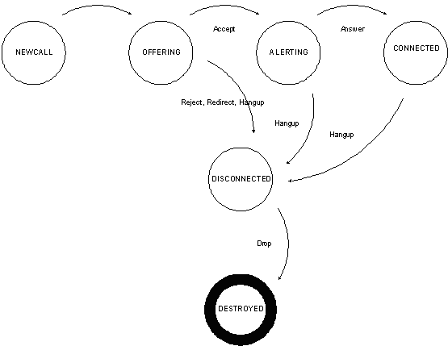

|
Category |
Description |
|---|---|
EVENT_CATEGORY_CALLSTATE |
CALLSTATE events signify a change in state of a call. States range from the notification of a new call to ringing to connection established to changes in audio state (starting sending, stop sending) to termination of a call. |
EVENT_CATEGORY_LINESTATE |
LINESTATE events indicate changes in the status of a line appearance. Lines identify inbound and outbound identities and can be either provisioned (hardcoded) or configured to automatically register with a registrar. Lines also encapsulate the authentication criteria needed for dynamic registrations. |
EVENT_CATEGORY_INFO_STATUS |
INFO_STATUS events are sent when the application requests sipXtapi to send an INFO message to another user agent. The status event includes the response for the INFO method. Application developers should look at this event to determine the outcome of the INFO message. |
EVENT_CATEGORY_INFO |
INFO events are sent to the application whenever an INFO message is received by the sipXtapi user agent. INFO messages are sent to a specific call. sipXtapi will automatically acknowledges the INFO message at the protocol layer. |
Table 4: Major CALL_STATE events
|
Major Event |
Description |
|---|---|
CALLSTATE_NEWCALL |
The NEWCALL event indicates that a new call has been created automatically by the sipXtapi. This event is most frequently generated in response to an inbound call request. |
CALLSTATE_DIALTONE |
The DIALTONE event indicates that a new call has been created for the purpose of placing an outbound call. The application layer should determine if it needs to simulate dial tone for the end user. |
CALLSTATE_REMOTE_OFFERING |
The REMOTE_OFFERING event indicates that a call setup invitation has been sent to the remote party. The invitation may or may not every receive a response. If a response is not received in a timely manor, sipXtapi will move the call into a disconnected state. If calling another sipXtapi user agent, the reciprocate state is OFFER. |
CALLSTATE_REMOTE_ALERTING |
The REMOTE_ALERTING event indicates that a call setup invitation has been accepted and the remote user is in the alerting state (ringing). Depending on the SIP configuration, end points, and proxy servers involved, this event should only last for up to 3 minutes. Afterwards, the state will automatically move to DISCONNECTED. If calling another sipXtapi user agent, the reciprocate state is ALERTING |
CALLSTATE_CONNECTED |
The CONNECTED state indicates that call has been setup between the local and remote party. Audio should be flowing provided and the microphone and speakers should be engaged. |
CALLSTATE_DISCONNECTED |
The DISCONNECTED state indicates that a call was disconnected or failed to connect. A call may move into the DISCONNECTED states from almost every other state. For more information on the causes for a DISCONNECTED event, please review the DISCONNECTED minor states codes. |
CALLSTATE_OFFERING |
An OFFERING state indicates that a new call invitation has been extended this user agent. Application developers should invoke sipxCallAccept(), sipxCallReject() or sipxCallRedirect() in response. Not responding will result in an implicit call sipxCallReject(). |
CALLSTATE_ALERTING |
An ALERTING state indicates that an inbound call has been accepted and the application layer should alert the end user. The alerting state is limited to 3 minutes in most configurations; afterwards the call will be canceled. Applications will generally play some sort of ringing tone in response to this event. |
CALLSTATE_DESTROYED |
The DESTORYED event indicates the underlying resources have been removed for a call. This is the last event that the application will receive for any call. The call handle is invalid after this event is received. |
CALLSTATE_UNKNOWN |
An UNKNOWN event is generated when the state for a call is no longer known. This is generally an error condition; see the minor event for specific causes. |
In Figure 1, the state diagram depicts the typical life cycle for an outbound call. An event is sent to the application developers on state transitions. Details on each event can be found in Table 4 and the sipXtapi documentation.
Figure 1: Events for an outbound call

In Figure 2, the state diagram describes the typical life cycle for an inbound call. The “OFFERING” event signals a request for a connection and the application developer can choose to accept the call, reject the call, or redirect the call. Note: Accepting the call is precursor to altering (or ringing) the user.
Figure 2: Events for an inbound call

Example 1: Placing a simple call
This example demonstrates how to setup a basic call, monitor states, and then clean up the call. The example assumes that the remote party will initiate the hang up.
sipXtapi Setup
Figure 3: sipXtapi Setup
1: SIPX_INST g_hInst; |
In Figure 3, lines 1 to 3 define global variables that are used
throughout the example: user agent instance, default line identity, and call
handle.
Line 5 initializes the user agent and specifies the default port settings.
SIP_PORT and TCP_PORT are traditionally 5060 and define the SIP signaling
ports. RTP_START_PORT defines the starting port for RTP audio traffic. sipXtapi
will allocate two adjacent audio ports (RTP & RTCP) for each call.
Line 6, adds a callback procedure for event notifications.
Lines 7 and 9 define a line identity and add authentication credentials for that line.
Placing Call
Figure 4: Placing outbound call
1: sipxCallCreate(g_hInst, g_hLine, &g_hCall); |
In Figure 4, a basic call is created and initiated to “sip:myfriend@example.com”. The line created in Figure 3 was specified and is used for the outbound call identity. Results from the connection attempt are delivered asynchronously though event call backs. However, sipxCallConnect(…) may yield a non-successful return code if the address is malformed or if the domain name is invalid.
Event callback signature
Figure 5: Call back signature
1: void EventCallbackProc( SIPX_CALL hCall, |
Figure 5 provides a skeleton for an event call back. See Table 3 for description of the major event states. Call backs are invoked on a sipXtapi thread context and should not be blocked by the application layer. For a description of the callback parameters, see Table 5.
Table 5: Call back parameters
|
Parameter |
Description |
|---|---|
SIPX_CALL |
Handle to the call associated with the state change |
SIPX_LINE |
Line associated with the call. This is most useful when receiving new calls. |
SIPX_CALLSTATE_MAJOR |
The new major event state. See Figures 1 and 2 and the Table 4 for descriptions. |
SIPX_CALLSTATE_MINOR |
The minor event state (or cause code). The cause code gives more meaning behind the major code. For example, was the call disconnected because the remote party was busy or because the remote party hung up? See the sipXtapi documentation for descriptions. |
void* |
Application data specified when the listener was first added. |
Handling remote offered event
Figure 6: Handling remote offered
1: handleRemoteOffered(SIPX_CALL hCall, SIPX_CALLSTATE_MINOR eMinor) |
The REMOVE_OFFERING event does not require any action. Generally application
developers will display status indicating the progress of the call.
Handling remote alerting event
Figure 7: Handling remote alerting
1: handleRemoteAlerting(SIPX_CALL hCall, SIPX_CALLSTATE_MINOR eMinor) |
Like REMOTE_OFFERING, the REMOTE_ALERTING event is used to provide
feedback to the end user. The code snipped in Figure 7 will play a ring back
tone to the end user if “early media”, audio sent along with the alerting
indication, is not present. Early media is detectable by looking minor call
state event. Early media is often provided by PSTN gateways to provide audible
call status.
Handling connected event
Figure 8: Handling connected
1: handleConnected(SIPX_CALL hCall, SIPX_CALLSTATE_MINOR eMinor) |
The CONNECTED state is significant for user feedback, however, does not require any actions from the application developer. The application layer should pay attention to the minor state events for changes in the connected event. For example, the call may be placed on or off hold.
Handling remote disconnected event
Figure 9: Handling disconnected
1: handleDisconnected(SIPX_CALL hCall, SIPX_CALLSTATE_MINOR eMinor) |
The DISCONNECTED event is generated in many different scenarios. Examples range
from locally hang up, the remote party hanging up, a busy end point, a network
outage, etc. It is important to look at the minor call state code to determine
the reason for the disconnection and take an appropriate action. In Figure 9,
the code snippet blindly destroys the call; however, if the minor code was
DISCONNECTED_BUSY, one might want to play a busy tone as audible feedback. Once
the end user acknowledged the failure, the application developer would then
destroy the call.
Example 2: Receiving a call; audio loopback
This example demonstrates how to receive a call and use media hooks to build a simple audio loopback device. The basic sipXtapi setup and event skeleton is identical to Example 1. However, additional setup is required along with different event processing.
NOTE: This example assumes that only one call is active at any point in time.
Handling offering event
Figure 10: Handling offering event
1: handleOffering(SIPX_CALL hCall, SIPX_CALLSTATE_MINOR eMinor) |
Upon receiving an OFFERING event, the application developer must accept, reject, or redirect the call. In this example, the call is accepted; however, one should consider rejecting the call if resources are limited or the end users has decided to hold all calls, etc. Depending on the SIP environment, the user agent may redirect calls to another user agent (e.g. voicemail) when the phone is busy. In many architects that decision is pushed into the network and the end point is expected to only reject calls.
Handling alerting event
Figure 11: Handling alerting event
1: handleAlerting(SIPX_CALL hCall, SIPX_CALLSTATE_MINOR eMinor) |
The ALERTING event signifies that a call has been accepted and the end user should be alerted. In a soft phone, one would alert the user by playing a ring tone or a custom ring file. This example automatically answers the calls. The clearLookback() call is described later.
Loopback routines
Figure 12: Loopback routines
1: #define SAMPLES_PER_FRAME 80 |
A very simple loopback ring buffer is defined and initialized in Figure 12. For this example, the samples per frame and loopback delay are fixed at 80 samples/frame (8000Hz) and 200 frames (2 seconds).
initLoopback() and clearLoopback() are helper functions. The initLoopback()
method allocates enough memory to hold samples during the delay period. The
clearLoopback routine is called between calls to clears all of the samples.
Samples are formatted as mono, 16-bit signed, little endian PCM.
Hook implementation
Figure 13: Hook implementation
1: void SpkrAudioHook(const int nSamples, const short* pSamples) |
The sipXtapi SDK allows application developers to hook audio sources and targets to inject or consume audio. For this example, data heading for the speaker is stored in a ringer buffer and later injected as microphone source data. With the 200 frame delay, the remote calling party will hear their voice 2 seconds later.
Additional call setup
Figure 14: Additional call setup
1: initLoopback() ; |
Plugging in the loopback code is fairly easy. One needs to initialize the loopback data structure and set the speaker and microphone audio hooks as demonstrated in Figure 14.
More Information
|
Method |
Description / Instructions |
|---|---|
Review API Definition |
API documentation is automatically generated from the source code by doxygen. Please click the "Files" link on the top of this page to access detailed documentation. |
Latest Docs |
The latest overview and API documentation is found in SIPfoundry source code
repository. This information is reviewed easily online: |
SIPfoundry Web Site |
The sipXtapi project is a included as part of the sipXcallLib project. Please
review the sipXcallLib project page for additional information: |
Example source code |
Example source code is provide with the sipXcallLib project. You will need to fetch the sipXcallLib, sipXtackLib, sipXmediaLib, and sipXportLib projects to build sipXtapi, however, source examples are easily reviewed online:
|
sipX developer mailing list |
The sipX-dev mailing list is useful for find answers to questions not covered by any of the other sources. Please search the archive for answers before posting your question. |
Problems with these docs? Please email bob AT sipfoundry.org.